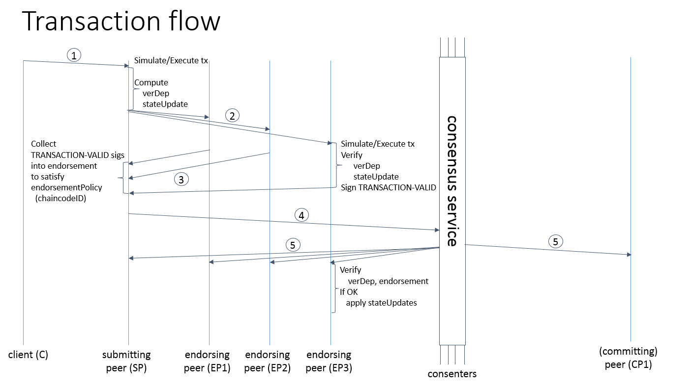
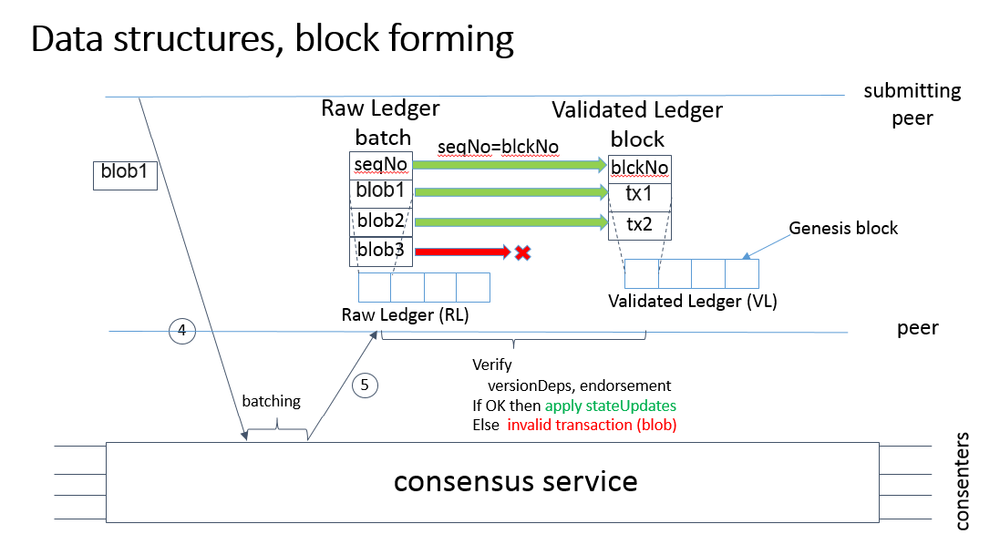

[翻译]Next Consensus Architecture Proposal
作者: Elli Androulaki, Christian Cachin, Angelo De Caro, Konstantinos Christidis, Chet Murthy, Binh Nguyen, Alessandro Sorniotti, and Marko Vukolić
翻译：梧桐树
这篇文档记录的是区块链基础架构，区块链节点根据角色分为peers（维护状态/总账的节点）和consenters（批准区块链状态中交易顺序的节点）。在通常的区块链架构中（包括2016年7月的Hyperledger fabric），这些角色都是集成的（参看Hyperledger fabic的validating peer）。这个架构还引入了背书节点（endorsers）的概念，它其实是一种特殊类型的节点，用来模拟执行和背书交易（大概和Hyperldger fabric 0.5-developer-preview的执行/验证交易是类似的）。
这种架构和peers/consenters/endorsers集成的设计相比有如下的优势：
- 链码的可信灵活性（chaincode trust flexibility）。从架构上，区分开链码（区块链应用程序）是可信的假设和共识是不可信的假设。就是说，参与到共识服务中的节点可能是批准节点（consenters），也能容忍一些节点失败或者捣乱。每个链码的背书节点也可能是不一样的。
- 可扩展性（Scalability）。负责特定链码的背书节点和批准节点是正交的，这比所有功能都在同一个节点完成更好扩展。尤其是，当最终不同的链码都指定不同的背书节点时，链码会在不同的背书节点上分散开，它们就可以并行执行了，链码执行这里叫背书（endorsement）。另外，链码执行是非常耗时的，已经从共识服务的关键路径中移除了。
- 机密性（Confidentiality）。这个架构使对内容和执行状态更新有机密性要求的链码部署更容易了。
- 共识模块性（Consensus modularity）。这个架构是模块化的，运行插件化的共识实现。
目录
- 系统架构
- 基本的交易背书工作流
- 背书策略
- 区块链数据结构
- 状态转换和检查点
- 机密性
1. 系统架构
区块链是由很多相互通信的节点组成的分布式系统。区块链运行程序（叫链码），保存状态和总账数据，执行交易。链码是最核心的元素，交易是在链码上执行的操作，并且只有链码才能更改状态。交易必须要有背书，只有有背书的交易才能被提交，才能影响状态。有一些具有管理功能和参数的特殊链码，统称系统链码。
1.1. 交易
交易有两种类型：
- 部署交易（Deploy transactions） 用程序作为它的一个参数创建新的链码。当部署交易成功执行以后，我们就说链码被安装到“链上”了。
- 调用交易（Invoke transactions） 在前面部署的链码上执行一个操作。一个调用交易指的是链码和它提供的功能。如果成功的话，链码会执行指定的功能，可能会修改相关的状态，然后返回输出。
后面还会介绍，部署交易是调用交易的特殊情况，调用交易创建新的链码就是在系统链码上的调用交易。
注意：这个文档假设一个交易创建新的链码或者调用交易都是在已经部署的链码上操作的。这个文档没有描述如下内容：a) 支持跨链码的交易; b) 查询交易（只读的）的优化。
1.2. 状态（State）
区块链状态（Blockchain state）。区块链的状态（世界状态：world state）有一个简单的结构，建模成了一个带版本控制的KV存储（KVS），其中键是名称，值是任意的二进制大对象。这些数据由运行在区块链上的链码通过put和get的KVS进行操作。这些状态是被永久存储的，更新状态也会写日志。注意带版本控制的KVS只是状态的模型，实现方式可以实际的KVS系统，也可以是关系型数据库系统或者其他的解决方案。
形式化的表示就是，区块链状态s是K -> (V X N)映射的一个元素，其中：
K是键的集合V是值的集合N是无数个有序的版本号集合。单射函数next: N -> N有输入N的一个元素，返回下一个版本号。
V和N都有一个特殊的元素\bot，代表N最小的元素。初始化的时候，所有的键都被映射到(\bot,\bot)。s(k)=(v,ver)这个表达式中，v用s(k).value来表示，ver用s(k).version来表示。
KVS操作是这样建模的：
put(k,v)操作。对k\in K和v\in V键值对，区块链状态s的新状态s'计算方法是：s'(k)=(v,next(s(k).version))。并且对所有的k'!=k，表达式s'(k')=s(k')都成立。get(k)操作。返回s(k)。
状态分区（State partitioning）。KVS中的键可以通过名称就能识别出它们属于哪个链码，所以只有特定链码的交易才能修改属于这个链码的键。原则上，任意的链码都能读取属于其他链码的键（当然机密链码的状态是不能读的，参考第6部分）。修改2个或者多个链码状态的跨链交易，以后会支持。
总账（Ledger）。区块链状态的变化过程（历史）是保存在总账中的。总账是交易区块的散列链（hashchain），总账中的交易是全序的。
区块链状态和总账会在第4部分详细描述。
1.3. 节点（Nodes）
节点是区块链的通信实体。节点是一个逻辑的概念，不同类型的节点是可以运行在同一个物理服务器上的。重要的是节点是怎么被分组成“信任域（trust domains）”，怎么和控制它们的逻辑实体关联的。
有3种类型的节点：
-
客户端（Client）或者提交客户端（submitting-client）：提交实际交易请求的客户端。
-
伙伴（Peer）：一个提交交易，维护状态和总账副本的节点。伙伴有两种特殊的角色：
a. 提交伙伴（submitting peer）或者提交者（submitter）
b. 背书伙伴（endorsing peer）或者背书者（endorser）
-
共识服务节点（Consensus-service-node）或者批准者（consenter）：一个运行了有送达保证（delivery guarantee，比如原子广播）通信服务的节点，送达保证典型的实现方法是运行共识服务。
注意，批准者和客户端是不维护总账和区块链状态的，只有伙伴才会。
节点的类型下面会详细解释。
1.3.1. 客户端（Client）
客户端表示的是代表终端用户的实体，它必须连接到伙伴才能和区块链通信。客户端可以根据自己的选择连接到任意一个伙伴上，然后创建再调用交易。
1.3.2. 伙伴（Peer）
伙伴通过共识服务通信维护区块链状态和总账。它们从共识服务接收有序的更新状态，然后更新本地维护的状态。
伙伴可以选择下面描述的两种角色：
-
提交伙伴（Submitting peer）。提交伙伴是一种特殊的角色，它给客户端提供接口，这样客户端就可以连接到提交伙伴调用交易和获取结果。这个伙伴代表一个或者多个客户端和其他节点通信来执行交易。
-
背书伙伴（Endorsing peer）。背书伙伴的特殊功能是对特定的链码，在其提交交易前对它进行背书。每个链码都可以指定一个背书策略，可能会涉及背书伙伴的集合。策略会定义一个有效的交易背书（典型情况是背书着的签名集合）的充要条件，这会在第2和3部分描述。一个特殊情况是，安装新链码的部署交易中，（部署）背书策略是系统链码的背书策略指定的。
强调一个伙伴同时有提交伙伴和背书伙伴角色的时候，就叫它交付伙伴（committing peer）。
1.3.3. 共识服务节点（Consensus service node (Consenters)）
批准者组成了共识服务，比如，一个提供交付保证的通信组织。共识服务可以有多种实现方式：从中心化的服务（比如：部署和测试）到目标是不同网络和节点容错模型的分布式协议。
伙伴是共识服务的客户端，在于共识服务给它提供了一个有广播交易信息的共享通信通道。伙伴连接到通道上，可以发送或者接收消息。通道支持所有消息的原子交付，就是，消息通信是全序交付的和（跟实现相关）可靠的。换句话说，通道输出给所有连接的节点相同的消息，而且输出的逻辑顺序是相同的。原子通信保证又叫全序广播（total-order broadcast），原子广播（atomic broadcast），或者分布式系统环境下的共识（consensus）。通信过的消息就是会保存在区块链状态中的候选交易了。
共识通道分区（Partitioning (consensus channels)）。共识服务可能支持多通道，类似发布/订阅（pub/sub）消息系统的主题。客户端链接到一个指定的通道，就可以发送或者获取到达的消息。通道可能会有分区 - 客户端连接到一个通道是不知道其他通道的存在的，但是客户端可以连接到多个通道。为简单起见，本文档后面的部分，除非明确的提到了的其他情况，我们都假设共识服务是有单个通道/主题组成的。
共识服务API（Consensus service API）。伙伴连接到共识服务提供的通道，是通过共识服务的API。共识服务API有两种基本的操作（更通用的叫异步事件）：
-
broadcast(blob)：提交伙伴调用它在通道上广播任意的消息blob。这在BFT中，给服务发送一个请求，又叫request(blob)。 -
deliver(seqno, prevhash, blob)：共识服务调用它给伙伴发送带非负序列号seqno和最近一次发送发送消息的hashprevhash的消息blob。换句话说，它是共识服务的输出事件。deliver()在发布/订阅系统中叫notify()，BFT系统中叫commit()。
注意共识服务客户端（比如伙伴）只通过broadcast()和deliver()事件和服务进行交互。
共识内容（Consensus properties）。共识服务（或者原子广播通道）有如下的保证，回答了这些问题：广播消息发生了什么，交付消息间有什么关系?
- 安全性 - 一致性保证（Safety (consistency guarantees)）：只要伙伴连接到通道有足够的时间（它们可以断开或者宕掉，重启或者重新连接就可以），它们就能看到
相同顺序的交付消息(seqno, prevhash, blob)。这意味着，给所有伙伴的输出（deliver()事件）都是相同顺序的，相同的序号都是相同的内容（blob和prevhash）。需要注意的是，这只是一个逻辑顺序，并且，给一个伙伴的deliver(seqno, prevhash, blob)并不需要和给另外一个伙伴输出的deliver(seqno, prevhash, blob)有时间上的关联。换句话说，给定一个特定的seqno，没有两个正常的伙伴会发送不同的prevhash和blob。而且是，除非有共识客户端（伙伴）真正的调用了broadcast(blob)，是不会发送blob消息的，最好呢，只发送一次每个广播的blob。
还有，deliver()事件包含了上一个deliver()事件的加密哈希prevhash。当共识服务执行一个原子广播保证时，prevhash是序号为seqno-1的deliver()事件的加密哈希。这就在不同的deliver()的事件之间建立了一个哈希链，能够用来帮助验证共识输出的完整性，后面的第4和5部分会讨论这个。特殊情况是，第一个deliver()事件的prevhash有一个默认值。
- 活跃度 - 交付保证（Liveness (delivery guarantee)）：共识服务的活跃度保证是共识服务的实现指定的。精确的保证要依赖网络和节点容错模型。
原则上，如果提交没有失败，共识服务应该保证每个连接到共识服务的伙伴最终都能交付每个提交的交易。
总结一下，共识服务保证了下面的内容：
-
协议（Agreement）。正常伙伴的任意两个事件，
deliver(seqno, prevhash0, blob0)和deliver(seqno, prevhash1, blob1)，如果有相同的seqno，则有prevhash0==prevhash1，blob0==blob1成立； -
哈希链完整性（Hashchain integrity）。正常伙伴的任意两个事件，
deliver(seqno-1, prevhash0, blob0)和deliver(seqno, prevhash, blob)，有prevhash = HASH(seqno-1||prevhash0||blob0)； -
不遗漏（No skipping）。如果一个共识服务给一个正常节点
p输出deliver(seqno, prevhash, blob)，如果seqno>0，则p一定已经交付了deliver(seqno-1, prevhash0, blob0)事件； -
不创建（No creation）。一个正常节点的任意
deliver(seqno, prevhash, blob)事件，前面一定有一个伙伴发送了broadcast(blob)事件； -
不重复（No duplication，可选的）。对任意的两个事件
broadcast(blob)和broadcast(blob')，当正常伙伴交付了两个事件，deliver(seqno0, prevhash0, blob)和deliver(seqno1, prevhash1, blob')，如果blob==blob'，则有seqno0==seqno1和prevhash0==prevhash1成立； -
活跃度（Liveness）。如果一个正常伙伴产生了
broadcast(blob)事件，则每个正常伙伴“最终”都会发出一个deliver(*, *, blob)事件，其中*代表任意值。
2. 交易背书的基本流程
下面我们概要性的介绍一个交易的高层请求流程。
备注：注意后面的协议并不假定所有的交易都是确定性的，允许不确定性的交易。
2.1. 客户端创建一个交易并发送给自己选择的一个提交伙伴
要调用一个交易，客户端发送如下的消息给提交伙伴spID。
<SUBMIT,tx,retryFlag>，其中：
tx=<clientID,chaincodeID,txPayload,clientSig>，其中：clientID是提交客户端的ID，chaincodeID指的是交易所属的链码，txPayload是提交的交易本身的有效载荷，clientSig是客户端tx消息其他项的签名。
retryFlag是一个布尔值，告诉提交伙伴万一交易失败了要不要重传，
调用交易和部署交易的txPayload是不一样的（比如，调用交易会引用一个部署相关的系统链码）。如果是调用交易，txPayload只有一个项：
invocation = <operation, metadata>，其中：operation代表链码的操作（函数）和参数，metadata代表调用相关的属性。
如果是部署交易，会有两个项：
chainCode = <source, metadata>，其中：source代表链码的源码路径，metadata代表链码和应用相关的属性。
policies包含了所有伙伴都能访问的链码策略，比如背书策略。
TODO：确定是否要在客户端显示的包含本地/逻辑时间（时间戳）。
2.2. 提交伙伴准备一个交易并发送给背书者获取背书
提交伙伴收到客户端发来的<SUBMIT,tx,retryFlag>消息后，首先要验证客户端的签名clientSig，然后就准备交易。提交伙伴会临时的执行交易（txPayload），过程是通过执行交易关联（chaincodeID）的链码和拷贝提交伙伴本地保存的状态。
执行的结果，提交伙伴计算状态更新（stateUpdate）和版本依赖（verDep），这在DB语言中又叫MVCC+postimage。
还记得状态是键/值对（k/v）组成的吧。所有的k/v记录都是版本化的，就是说，每个记录都包含排过序的版本信息，每个键更新的时候都会递增版本信息。伙伴解析链码访问的交易记录键值对，可以读可以写，它还没有更新这个状态。更具体的说：
verDep是一个元组verDep=(readset,writeset)。给定提交伙伴执行交易前的一个状态s：- 对交易读取的每个键
k，把(k,s(k).version)加入到readset中。 - 对交易修改的每个键
k，把(k,s(k).version)加入到writeset中。
- 对交易读取的每个键
- 另外，对交易修改的每个键
k的新值v'，把(k,v')加入到stateUpdate中。v'也可以是新值相对旧值s(k).value的增量。
实际的实现可以把verDep.writeset和stateUpdate放到同一个数据结构中。
然后，tran-proposal := (spID,chaincodeID,txContentBlob,stateUpdate,verDep)，其中：txContentBlob是链码/交易相关的信息，目的是能标识tx（比如，txContentBlob=tx.txPayload）。更详细的信息第6部分会介绍。
所有节点都会用tran-proposal的加密哈希来作唯一交易标识符tid（比如：tid=HASH(tran-proposal)）。
然后提交伙伴就把交易（tran-proposal）发送给链码的背书者。背书伙伴的选择是根据解析策略来的，还要看伙伴的可用性和提交伙伴的连通性。比如，可以把交易发送给指定chaincodeID所有的背书者。这有可能，有的背书者是离线的，还有一些会拒绝对交易进行背书。提交伙伴尽量用可用的背书者满足策略要求。
提交伙伴spID给背书伙伴epID发送的交易消息是：
<PROPOSE,tx,tran-proposal>。
可能的优化：实现上可以优化下tx.chaincodeID和tran-proposal.chaincodeID里重复的chaincodeID，tx.txPayload和tran-proposal.txContentBlob里重复的txPayload。
最后，提交伙伴在内存中保存tran-proposal和tid，等待背书伙伴的回复。
其他设计：这里提交伙伴和背书伙伴是直接通信的。这可以是共识服务的一个功能，这种情况下，需要确定faric要不要原子广播交付保证还是直接用简单的p2p通信。这样共识服务也要负责根据策略收集背书再发送给提交伙伴。
TODO：需要确定提交伙伴和背书伙伴之间的通信：用p2p还是通过共识服务。
2.3. 背书服务和给交易背书
链码tran-proposal.chaincodeID对应的背书伙伴收到通过PROPOSE消息发送来的交易后，执行如下步骤：
-
背书者验证签名
tx.clientSig，检查tx.chaincodeID==tran-proposal.chaincodeID。 -
背书者模拟交易（用
tx.txPayload），验证状态更新和依赖信息都是正确的。如果所有的都是有效的，它就对(TRANSACTION-VALID, tid)进行数字签名，生成epSig。然后背书伙伴发送<TRANSACTION-VALID, tid,epSig>消息给提交伙伴（tran-proposal.spID）。 -
如果背书者模拟交易是失败了，有几种情况：
a. 如果背书者获取到的状态更新和
tran-proposal.stateUpdates里的不一样，它就对(TRANSACTION-INVALID, tid, INCORRECT_STATE)进行签名并发送给提交伙伴。b. 如果背书者发现了比
tran-proposal.verDeps更新的数据版本，它就对(TRANSACTION-INVALID, tid, STALE_VERSION)进行签名并发送给提交伙伴。c. 如果背书者因为其他的一些理由（内部的背书策略、交易错误等）不想对交易进行背书，它就对
(TRANSACTION-INVALID, tid, REJECTED)进行签名并发送给提交伙伴。
注意背书者在这一步还没有改变状态，状态的更新也不会写日志。
其他设计：对无效交易，背书伙伴可以不通知提交伙伴，不用显示的发送TRANSACTION-INVALID通知，。
其他设计：背书伙伴把TRANSACTION-VALID/TRANSACTION-INVALID消息及其签名提交给共识服务。
TODO：确定采用上面的哪种设计。
2.4. 提交伙伴收集交易的背书并通过共识服务进行广播
提交伙伴等待接收足够的信息和对(TRANSACTION-VALID, tid)进行的签名，表明交易提议（transaction proposal）是有背书（可能包含它自己的签名）的。这个过程依赖背书策略（再看看第3部分）。如果满足背书策略，交易就有背书了，注意这会儿还没有成功交付。从背书伙伴收集到的有背书交易的签名就叫背书（endorsement），提交伙伴把它们存储到endorsement里。
如果提交伙伴没有收集到交易提议的背书，它就丢弃掉这个交易并通知提交客户端。如果提交客户端设置（看步骤1和SUBMIT消息）了retryFlag，提交伙伴可能（根据提交伙伴的策略）会对交易进行重试（步骤2）。
对一个有效背书的交易，我们开始使用consensus-fabric。提交伙伴使用broadcast(blob)调用共识服务，其中blob=(tran-proposal, endorsement)。
2.5. 共识服务给伙伴发布交易
当出现一个deliver(seqno, prevhash, blob)事件，一个伙伴更新所有序号小于seqno消息的状态，过程是这样的：
-
伙伴根据链码（
blob.tran-proposal.chaincodeID）的策略检查blob.endorsement是否有效（这个步骤可以不用等到序号小于seqno的状态更新这个时候）。 -
伙伴同时验证依赖
blob.tran-proposal.verDep是有效的。
根据状态更新选择的一致性内容（consistency property）或者“隔离保证（isolation guarantee）”不同，依赖验证有多种实现方式。比如，可串行性（serializability）可以要求每个readset和writeset里键对应的版本号必须和状态里面键的版本号相同，丢掉不能满足这个要求的交易。另外一个例子，快照隔离（snapshot isolation ）要求writeset里所有的键，状态里的键和依赖数据里的版本号都一样。数据库要求更多的隔离保证。
TODO：确定坚持可串行性还是允许链码指定隔离级别。
-
如果所有的检查都通过了，这个交易就被认为是有效的（valid）或者已交付的（committed）。这就是说，一个伙伴添加一个交易到总账上，然后会在区块链状态上执行
blob.tran-proposal.stateUpdates。只有已交付的交易才会修改状态。 -
如果有检查失败了，交易就是无效的，伙伴会丢弃这个交易。重要的是要注意无效的交易是没有交付的，不会修改状态，也不会被记录。
另外，提交伙伴会通知客户端丢弃的交易。如果提交客户端设置（看步骤1和SUBMIT消息）了retryFlag，提交伙伴可能（根据提交伙伴的策略）会对交易进行重试（步骤2）。

图1. 交易流程图解（通用情况路径）
3. 背书策略
3.1. 背书策略规范
背书策略是对交易进行背书的条件。背书策略是链码安装的时候deploy交易指定的。只有根据策略进行背书的交易才是有效的。链码的调用交易会先获取链码策略的背书，否则是交付不了的。这是通过提交伙伴和背书伙伴之间的交互完成的，在第2部分已经介绍过了。
形式上，背书策略是关于特定变量的断言。实际上，它可以是：
- 链码相关的键或者标识符（链码的元数据里面能找到），比如，背书者集合；
- 更多的链码元数据；
- 交易本身的元素；
- 可能还有其他的。
背书策略断言的评估必须是确定性的。背书策略不能是复杂的，也不能是“小链码（mini chaincode）”。背书策略规范语言是有限制的，并且能够增加确定性。
断言列表是由简单到丰富，复杂性是由易到难的。就是说，支持只有节点的键和标识符的策略是相对比较简单的。
TODO：确定背书策略的参数。
断言可能包含结果是TRUE或者FALSE的逻辑表达式。一般情况下，条件会用链码的背书伙伴对交易调用签发的数字签名。
假链码指定了一个背书者集合E = {Alice, Bob, Charlie, Dave, Eve, Frank, George}，一些策略的示例：
-
E集合所有元素的有效签名。
-
E集合任意一个元素的有效签名。
-
满足
(Alice OR Bob) AND (any two of: Charlie, Dave, Eve, Frank, George)这个条件的背书伙伴的有效签名。 -
7个背书者中任意5个的有效签名。（更通用的情况是，有
n > 3f个背书者的链码，需要n个背书者中有2f+1个有有效签名，或者任意一个超过(n+f)/2个背书者的组有有效签名。）。 -
假设背书者都有一个“投注”或者“权重”，比如
{Alice=49, Bob=15, Charlie=15, Dave=10, Eve=7, Frank=3, George=1}，总投注是100：策略要求多数投注集合的有效签名（比如，一个总投注严格大于50的组），只要和George的X不一样的{Alice, X}，或者{everyone together except Alice}等等。 -
上面的例子里投注可以是静态的（链码的元数据里写死的）或者动态的（比如，依赖链码的状态并且可以在执行过程中修改）。
这些策略能起到多少作用还依赖应用程序，对背书者错误或者捣乱需要的恢复力，还有其他不同的属性。
3.2. 实现
一般情况，背书策略会根据背书伙伴要求的签名进行制定。链码的元数据必须要包含相应的签名验证密钥。
通常，背书是有一组签名组成的。每个伙伴或者能获取到链码元数据（包含签名验证密钥）的批准者都可以本地验证背书，因为它们不需要和其他节点进行交互。节点也不需要访问状态才能验证背书。
链码其他元数据的背书也可以用同样的方法验证。
TODO：形式化背书策略，设计具体的实现。
4. 区块链数据结构
区块链有3种数据结构：a) 原始总账（raw ledger），b) 区块链状态（blockchain state），c) 已验证总账（validated ledger）。区块链状态和已验证总账是为了效率，它们都可以从原始总账导出来。
-
原始总账（Raw ledger (RL)）。原始总账包含了伙伴的共识服务输出的所有数据。它是
deliver(seqno, prevhash, blob)事件的序列，组成了一个哈希链，prevhash的计算前面已经介绍过。原始总账包含了系统操作过程中出现过的信息，包括有效的和无效的交易，能够提供所有成功和不成功的状态改变、改变状态的尝试等可验证的历史记录。原始总账运行伙伴所有交易的历史并重建区块链状态（下面会介绍）。它还给提交伙伴提供了的
无效的（未交付的）交易的信息，根据这个信息提交伙伴的操作已经在第2.5部分描述过了。 -
区块链状态（(Blockchain) state）。状态是伙伴维护的（KVS的形式），它是可以从原始总账中通过过滤掉无效交易导出来（第2.5部分介绍过，看第5步的图1），然后更新有效交易到状态上（对
stateUpdate里的每个(k,v)，都执行一下put(k,v)，或者执行上一个状态的增量）。就是说，有了共识保证，所有的正常伙伴都能收到相同顺序的
deliver(seqno, prevhash, blob)事件。因为对背书策略和状态更新的版本依赖的计算方法都是确定的，所有的正常伙伴都能确定blob里面的交易是有效的。因而，所有伙伴都是已相同的方式交付、运用同样的交易序列并更新它们的状态。 -
已验证总账（Validated ledger (VL)）。为了维护只包含有效的和交付的交易（比如，比特币里面），除了状态和原始总账，伙伴还维护了
已验证总账。这是从原始总账中过滤掉无效的交易后的哈希链。
4.1. 批量处理和块信息
共识服务可以批量输出blobs，而不是输出单个的交易（blobs）。这样，共识服务必须要利用并传达每个批块里确定性的交易顺序。每个批块里交易数量是共识实现动态选择的。
共识批量处理不会影响原始总账的构建，还是交易的哈希链。不同的是，原始总账变成了批块的哈希链而不是单个交易的哈希链。
批量处理时，已验证总账（可选的）区块的构建过程是这样的。因为原始总账里可能包含无效的交易（比如，无效背书的交易或者无效版本依赖的交易），伙伴会先过滤掉这些交易再交付给区块。每个伙伴都是自己独自完成的。一个区块就是过滤掉无效交易后的共识批块。这些块的大小是可以动态调整的，也可能是空的。图2是区块构建的图解。

图 2. 从原始总账批量到已验证总账图解
4.2. 区块形成链
跟第1.3.3节描述的一样，共识服务输出原始总账的批块后组成了一个哈希链。
每个伙伴都会把已验证区块链成一个哈希链。批量处理的已验证总账和交付的交易组成一个区块，所有的区块链在一起组成一个哈希链。
具体来说，每个已验证总账包含：
-
前面一个区块的哈希
-
区块号
-
从上一个区块形成之后伙伴们交付的有序的有效交易列表（比如，对应批块的有效交易列表）
-
对应批块的哈希
伙伴会把所有的信息连接在一起并计算哈希，得出已验证总账里区块的哈希。
5. 状态传输和检查点
通常情况下，正常运行时，伙伴会从共识服务收到一系列的deliver()事件（包含批块交易），然后把这些批块追加到原始总账中并相应的更新区块状态、已验证总账。
可是，由于网络划分或者伙伴临时停电等，一个伙伴可能错过原始总账中多个批块。这时，伙伴就必须从其他伙伴那里传输状态才能和网络中的其他伙伴保存同步。这个部分就来看看一个实现。
5.1. 原始总账状态传输（批量传输）
为了解释清楚基本的状态传输怎么实现的，假定伙伴p的原始总账本地拷贝里最后一个批块序号是25（也就是，最后收到的deliver()事件的seqno等于25）。一段时间后，伙伴p收到共识服务的deliver(seqno=54,hash53,blob)事件。
这个时候，伙伴p发现缺少它的原始总账副本里26-53号批块。p采用p2p和其他节点通信获取缺失的批块。它呼叫其他其他伙伴传给它缺失的区块。在传输缺失批块时，p继续监听来自共识服务的新批块。
注意p不需要信任任何给它通过状态传输发送缺失批块的伙伴。因为伙伴p有批块53的哈希（就是，hash53），这是直接从共识服务那里获取到的，是p信任的，当所有的批块都收到了，p可以验证缺失区块的完整性。验证过程会检查他们是否是一个完整的哈希链。
当p获取到了所有的缺失批块并验证了缺失的批块号26-53，它就可以按照第2.5部分的步骤处理号26-54的每一个批块，然后构造区块链状态和已验证总账。
注意即使p缺失一些序号比较大的批块，它仍然可以在收到序号小的区块的时候就开始重建区块链状态和已验证总账。但是，在保存状态和已交付区块到已验证总账之前，伙伴p还需要完成缺失区块的状态传输（我们给的例子里，包含到53号批块），还要处理第2.5部分描述的单个传输批块。
5.2. 检查点
原始总账包含了无效的交易，不需要永久保存。但是，伙伴们不能在建立了相应的已验证区块后就简单的丢弃原始总账批块，精简原始总账。就是说，这个时候，如果有新的伙伴加入网络，其他伙伴不能给他传输原始总账里的被丢弃的批块，也不说服新加入的伙伴相信已验证总账区块的有效性。
为了便于总账精简，本文介绍一种检查点机制。它是在伙伴网络之间建立已验证总账区块的有效性，允许建立了检查点的已验证总账区块替换丢弃的原始总账批块。这就减少了存储空间，因为没有必要存储单个的交易了。它还减少了新加入伙伴重建状态的工作（因为它们不需要从原始总账中重构状态的时候构建单个交易的有效性了，只需要简单的重放已验证总账里的状态更新）。
注意检查点方便了总账的精简，它只是属于性能优化，对于设计正确来说检查点并不是必须的。
5.2.1. 检查点协议
伙伴们每CHK个区块就周期性的执行检查点，CHK是可以配置的参数。开始的时候，伙伴会给其他伙伴广播<CHECKPOINT,blocknohash,blockno,peerSig>消息，其中，blockno是当前的区块号，blocknohash是它的哈希值，peerSig是伙伴对(CHECKPOINT,blocknohash,blockno)的签名，这里的区块都是已验证总账里的。
一个伙伴收集CHECKPOINT消息，直到它有足够正确的和blockno、blocknohash匹配的签名信息，就开始构建有效的检查点（看第5.2.2部分）。
给区块号为blockno、哈希为blocknohash的区块建立检查点的时候，一个伙伴：
-
如果
blockno>latestValidCheckpoint.blockno，则它设置latestValidCheckpoint=(blocknohash,blockno); -
保存构成一个有效检查点的伙伴签名到集合
latestValidCheckpointProof中； -
（可选）精简批块序号小于等于
blockno的原始总账。
5.2.2. 有效检查点
显然，检查点协议提出了这个问题：什么时候精简原始总账？多少CHECKPOINT消息是“足够多”？。这是检查点有效性策略里面定义的，（至少）有两种可能的方法，也可能一起用：
-
本地检查点有效性策略（Local (peer-specific) checkpoint validity policy (LCVP)，每个伙伴相关的）。本地策略就是给定伙伴
p可以指定一个伙伴集合，这个集合里的伙伴都是p信任的，他们的CHECKPOINT信息就足够构建一个有效的检查点。比如，伙伴Alice的LCVP定义的是，需要从Bob或者同时收到Charlie和Dave收到CHECKPOINT消息。 -
全局检查点有效性策略（Global checkpoint validity policy (GCVP)）。检查点有效性策略可以是全局指定。除了设置粒度不同（GCVP设置粒度是系统（区块链），LCVP设置粒度是每个伙伴），GCVP和LCVP类似的。比如，GCVP可能会这么设置：
-
每个伙伴可以信任有7个不同伙伴确认的检查点；
-
有这么一个部署环境，每个批准者都是一个伙伴，有
f个批准者可能是（拜占庭）错误的，每个伙伴可以信任有f+1个不同伙伴确认的检查点。
-
5.2.3. 已验证总账状态传输（区块传输）
除了能帮助精简原始总账外，检查点可以在已验证总账区块传输的时候传输状态。这可以部分替代原始总账的批块传输。
从概念上来说，区块传输机制和批块传输是类似的。前面有一个例子，伙伴p丢失了序号为26-53的批块，从已经给区块号为50的区块建立了有效检查点的伙伴q那里获取了状态。状态传输分为2步：
-
首先，
p尝试从伙伴q那里获取检查点已更新到50区块的已验证总账。为此，q给p发送它本地的(latestValidCheckpoint,latestValidCheckpointProof)，我们这个例子是latestValidCheckpoint=(hash50,block50)。如果latestValidCheckpointProof满足p的检查点有效性策略，就可以传输26-50区块了。否则，p不会相信q的本地检查点是有效的。p可能选择进行原始总账的传输（第5.1部分）。 -
如果26-50区块的传输都成功了，
p还需要完成获取已验证总账51-53区块或者原始总账51-53批块的状态传输。为此，p可以简单的按照原始总账批量传输协议（第5.1部分），从q或者其他伙伴获取这些信息。注意已验证总账区块包含各自原始总账批块的哈希（第4.2部分）。因而，即使伙伴p在其原始总账中没有50批块，原始总账的批量传输依然可以完成，因为50区块是包含50批块的。